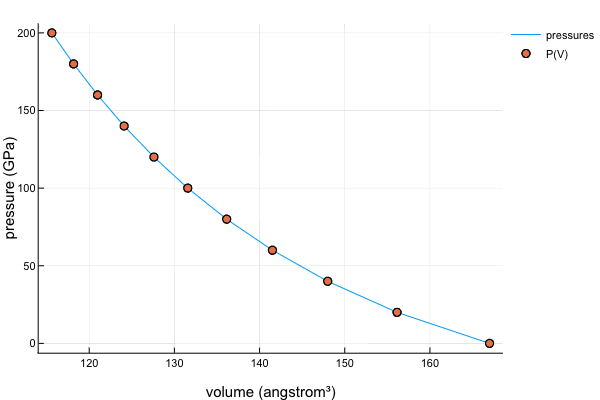

Find
This module contains a function findvolume, which is used to find an approximate volume at a given pressure, energy, or bulk modulus based on an equation of state. A result is not always guaranteed, especially when the equation of state is not a monotonic function of volume. However, according to experience, P(V) relation is usually a monotonic function. So we suggest using PressureForm to find the corresponding volume.
Usage
julia> using EquationsOfState, EquationsOfState.Collections, EquationsOfState.Find, Unitful, UnitfulAtomic
julia> pressures = collect(0:20:200) .* u"GPa";
julia> eos = BirchMurnaghan3rd(167u"angstrom^3", 2600u"kbar", 4.0);
julia> volumes = map(
p -> findvolume(PressureForm(), eos, p, (eps() * u"bohr^3", eos.v0 * 1.3)),
pressures
)
[ Info: Using method "Roots.Bisection"...
[ Info: Using method "Roots.Bisection"...
[ Info: Using method "Roots.Bisection"...
[ Info: Using method "Roots.Bisection"...
[ Info: Using method "Roots.Bisection"...
[ Info: Using method "Roots.Bisection"...
[ Info: Using method "Roots.Bisection"...
[ Info: Using method "Roots.Bisection"...
[ Info: Using method "Roots.Bisection"...
[ Info: Using method "Roots.Bisection"...
[ Info: Using method "Roots.Bisection"...
11-element Array{Quantity{Float64,𝐋^3,Unitful.FreeUnits{(Å^3,),𝐋^3,nothing}},1}:
167.0 Å^3
156.14036210727835 Å^3
147.99803635986564 Å^3
141.51093713795865 Å^3
136.13864615965332 Å^3
131.56784031939347 Å^3
127.60046278645824 Å^3
124.10332447387113 Å^3
120.98257680606459 Å^3
118.16962836248427 Å^3
115.61284838696814 Å^3Here we let the algorithm choose the bisection root-finding method to find the volumes corresponding to pressures.
A figure is plotted below to verify our results, and it fits very well.

Public interfaces
EquationsOfState.Find.findvolume — Methodfindvolume(form, eos, y, x0, method)
findvolume(form, eos, y, x0::Union{AbstractVector,Tuple})Find a volume which leads to the given pressure, energy, or bulk modulus based on an eos.
Arguments
form::EquationForm: anEquationForminstance.eos::EquationOfState: an equation of state. If it has units,yandx0must also have.y: a pressure, energy, or bulk modulus.x0: can be either a range of volumes (Vector,Tuple, etc.) or just a single volume. Units can be provided if necessary.method::Roots.AbstractUnivariateZeroMethod: a method used to find the root of an equation. If it is omitted, the algorithm will traverse all possible methods of Roots.jl. And thex0parameter must be an array or a tuple, of which only the maximum and minimum values will be used in the root-finding process.
All available methods are the leaves of the tree below (Remember to add a Roots. prefix):
AbstractUnivariateZeroMethod
├─ AbstractBracketing
│ ├─ AbstractAlefeldPotraShi
│ │ ├─ A42
│ │ └─ AlefeldPotraShi
│ ├─ AbstractBisection
│ │ ├─ Bisection
│ │ ├─ FalsePosition
│ │ └─ BisectionExact
│ └─ Brent
├─ AbstractHalleyLikeMethod
│ ├─ Halley
│ └─ Schroder
├─ AbstractNewtonLikeMethod
│ └─ Newton
└─ AbstractNonBracketing
└─ AbstractSecant
├─ Order0
├─ Order16
├─ Order2
├─ Order5
├─ Order8
├─ Esser
├─ King
├─ KumarSinghAkanksha
├─ Order1B
├─ Order2B
├─ Secant
├─ Steffensen
├─ Thukral16
└─ Thukral8The usage is like
findvolume(form, eos, y, (3, 4)) # Try all possible methods
findvolume(form, eos, y, (3, 4), Order1()) # Specify two starting points for secant method
findvolume(form, eos, y, 3.0, Order2()) # Use Steffensen method
findvolume(form, eos, y, big(3.0), Order16()) # Rapid convergence
findvolume(form, eos, y, (3, 4), Roots.A42()) # Fewer function calls than Bisection(), in this case
findvolume(form, eos, y, (3, 4), FalsePosition(8)) # 1 of 12 possible algorithms for false position
findvolume(form, eos, y, 3.0, Roots.Newton()) # Use Newton's method
findvolume(form, eos, y, 3.0, Roots.Halley()) # Use Halley's method